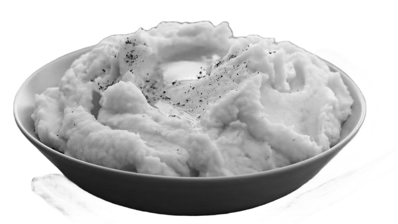
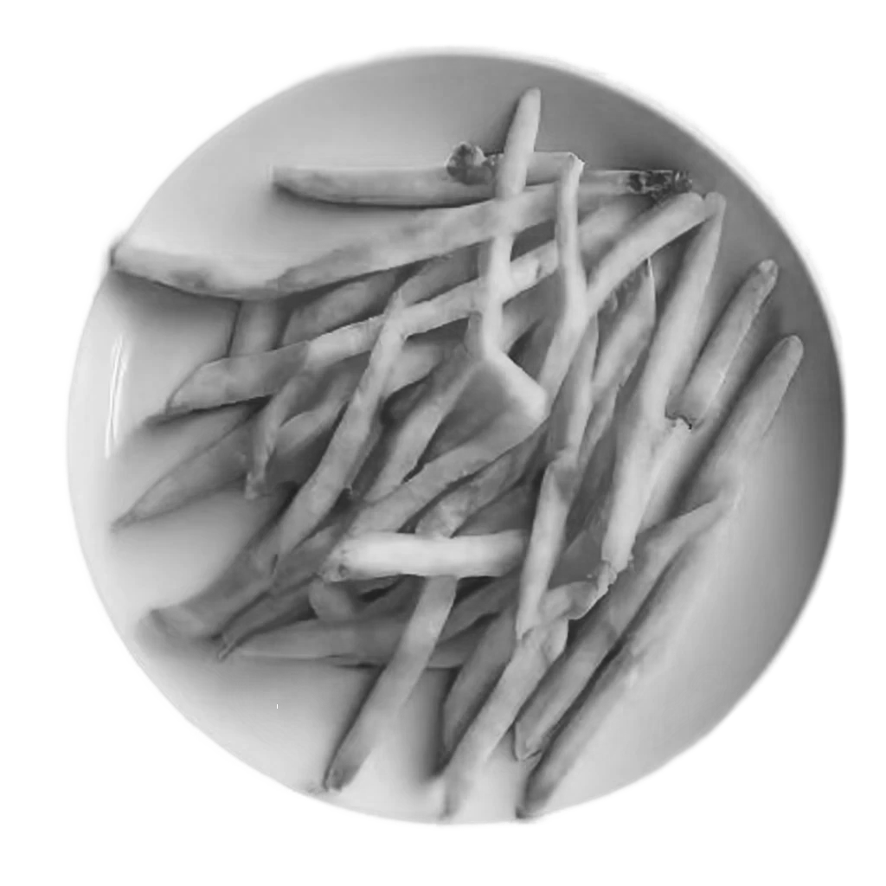
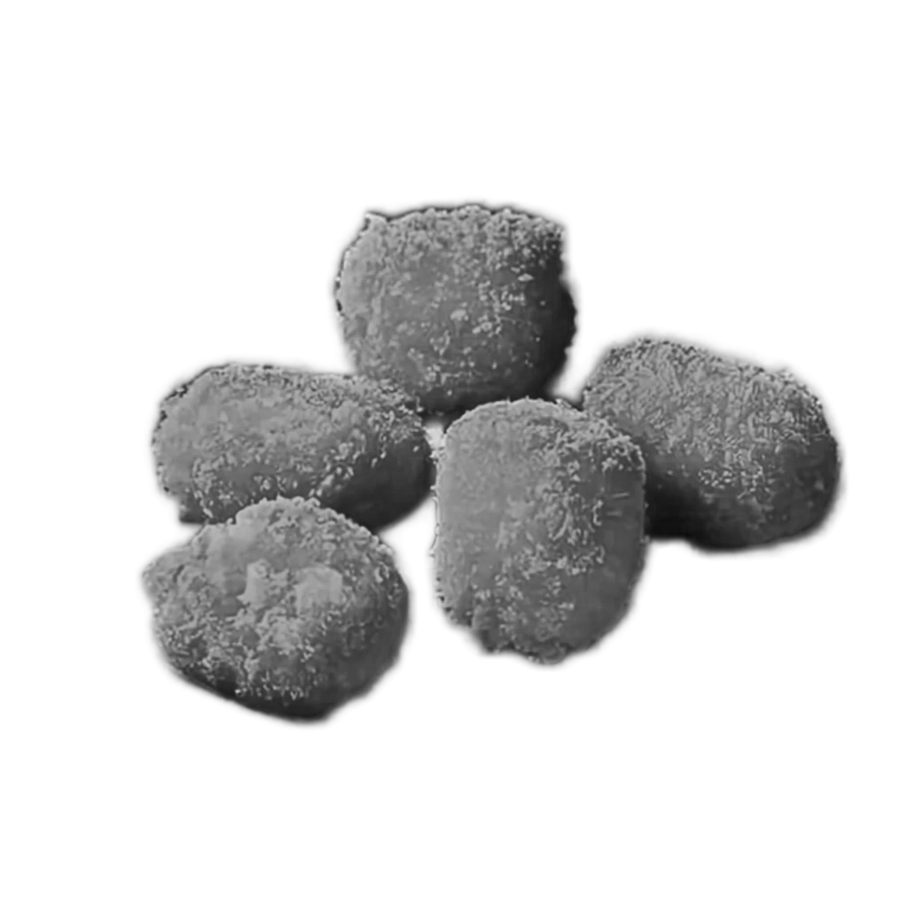
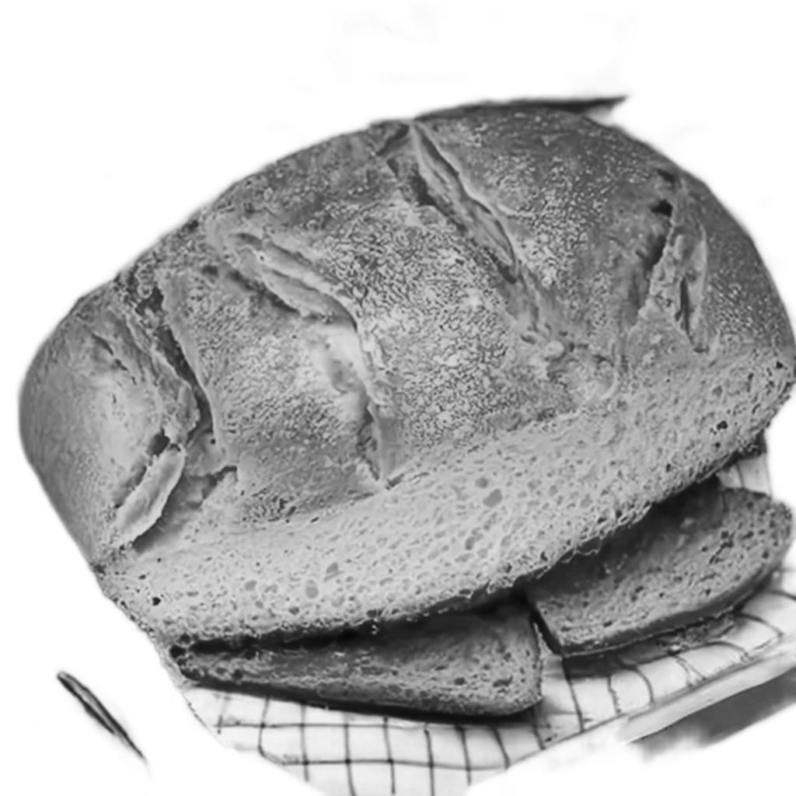
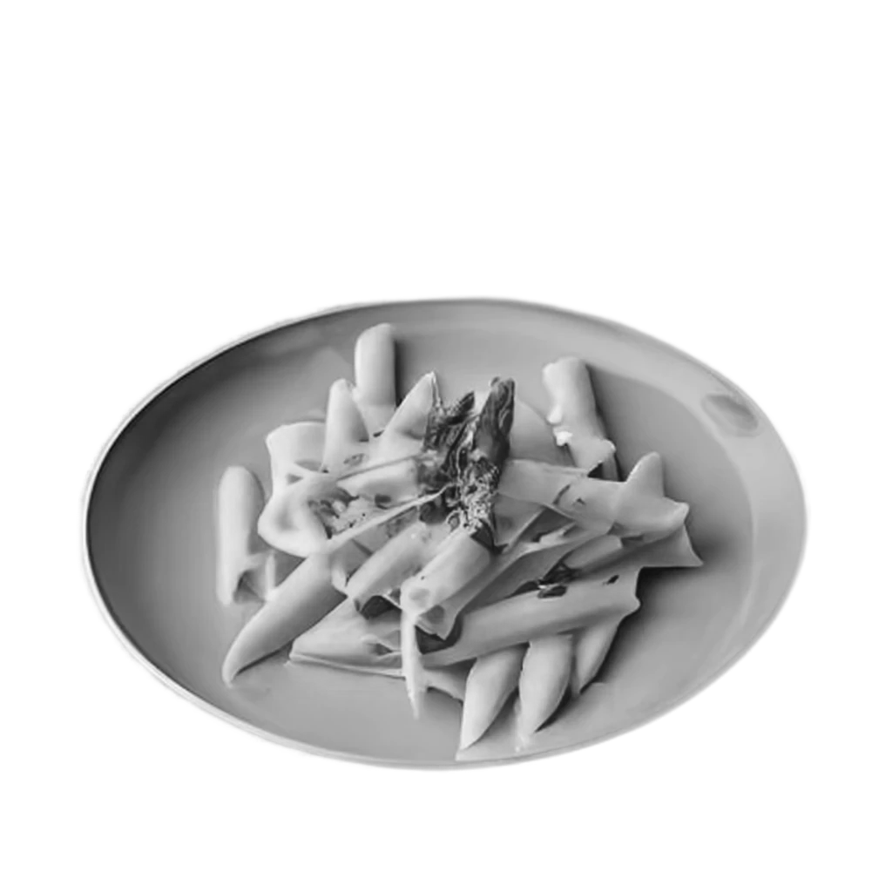

Brambory (Solanum tuberosum) jsou jednou z nejoblíbenějších a nejrozšířenějších plodin na světě. Pochází z Jižní Ameriky a jsou jednou z hlavních potravinových plodin, které se pěstují v mnoha částech světa. Brambory jsou nejen chutné a výživné, ale také velmi univerzální, protože se dají připravit mnoha způsoby a slouží jako základ pro různé produkty.
Původ a Historie
Brambory byly poprvé domestikovány původními obyvateli And, pravděpodobně v oblasti dnešního Peru, kolem 8000 let př. n. l. Evropskými objeviteli byly brambory přivezeny do Evropy v 16. století během španělského dobytí Jižní Ameriky. Postupně se staly nedílnou součástí evropské kuchyně a zahrady. Od té doby se brambory šířily po celém světě a staly se jednou z nejvýznamnějších plodin.
Výživná Hodnota
Brambory jsou bohaté na živiny a poskytují mnoho základních živin, včetně vitamínů (C, B6), minerálů (draslík, hořčík) a vlákniny. Obsahují také antioxidanty a další látky, které mají prospěšné účinky na zdraví. Jsou také významným zdrojem sacharidů, což z nich činí důležitou energetickou potravinu.
Bramborové produkty
-
Hrnky Brambor
Bramborové hrnky jsou oblíbeným pokrmem, který se připravuje vařením nebo pečením nakrájených brambor s různými kořením a příchutěmi. Mohou být podávány jako příloha nebo jako samostatné jídlo.
-

Bramborová Kaše
Bramborová kaše je dalším tradičním pokrmem, který se vyrábí vařením brambor a jejich rozmělněním na kaši. Může být dochucena máslem, mlékem, sýrem nebo bylinkami.
-
Bramborové Placky
Bramborové placky jsou oblíbeným pokrmem, který se připravuje smícháním strouhaných brambor s dalšími přísadami, jako je cibule, vejce a mouka, a následným smažením na pánvi. Jsou to skvělá volba jako příloha nebo lehké občerstvení.
-

Bramborový Salát
Bramborový salát je populární studený pokrm, který se skládá z vařených brambor smíchaných s majonézou, cibulí, kyselými okurkami a dalšími přísadami. Je oblíbený na piknicích a grilovacích večírcích.
-

Hranolky
Hranolky jsou jedním z nejoblíbenějších produktů z brambor. Jsou vyrobeny krájením brambor na tenké proužky a smažením nebo pečením. Jsou často podávány jako příloha k jídlu nebo jako samostatné občerstvení.
-

Bramborové Kroketky
Bramborové kroketky jsou oblíbeným pokrmem, který se připravuje smícháním vařených brambor s dalšími přísadami, jako je strouhaný sýr a bylinky, a následným tvarováním a smažením. Jsou lahodné a křupavé.
-

Bramborový Chléb
Bramborový chléb je alternativou k tradičnímu chlebu, která se připravuje přidáním vařených a rozmělněných brambor do těsta. Tento chléb má vláčnější texturu a jemnou chuť.
-

Bramborové Těstoviny
Bramborové těstoviny jsou vyráběny z bramborové mouky a jsou vhodnou alternativou pro ty, kteří chtějí omezit příjem pšeničných výrobků. Mají podobnou chuť jako tradiční těstoviny a lze je použít ve všech oblíbených pokrmech.